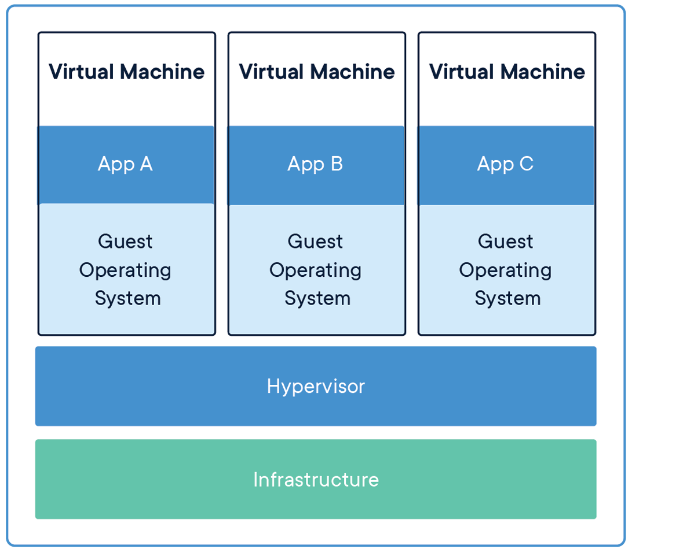
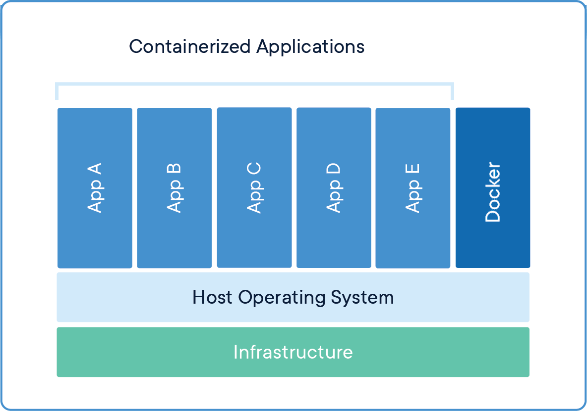
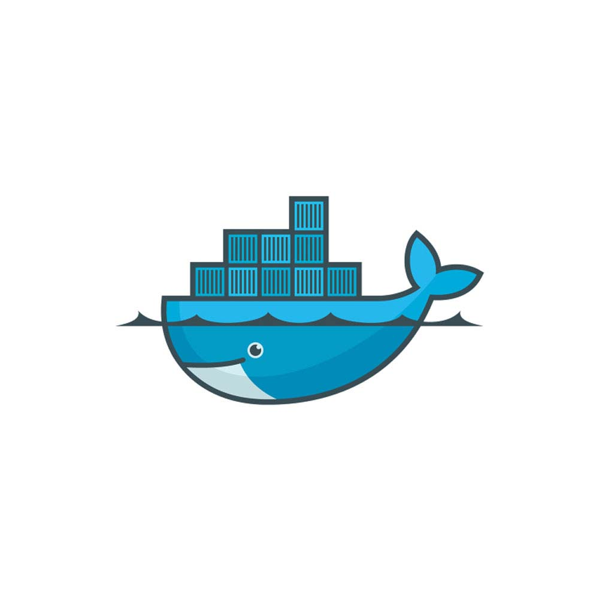
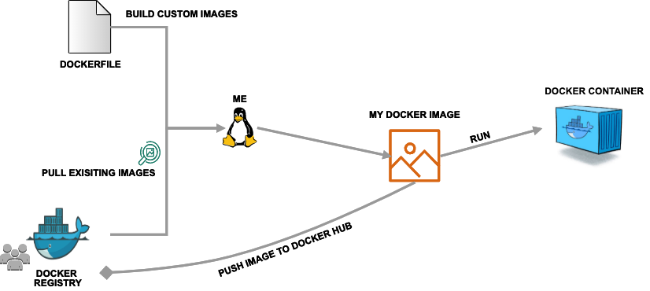

Introduction to Containers
Containers are an important common currency for app development, web services, scientific computing, and more. Containers allow you to package an application along with all of its dependencies, isolate it from other applications and services, and deploy it consistently and reproducibly and platform-agnostically. In this introductory module, we will learn about containers and their uses, in particular the containerization platform Docker.
After going through this module, you should be able to:
Describe what a container is
Use essential Docker commands
Find and pull existing containers from Docker Hub
Run containers interactively and non-interactively
What is a Container?
A container is a standard unit of software that packages up code and all its dependencies so the application runs quickly and reliably from one computing environment to another.
Containers allow a developer to package up an application with all of the parts it needs, such as libraries and other dependencies, and ship it all out as one package.
Multiple containers can run on the same machine and share the OS kernel with other containers, each running as isolated processes in user space, hence are lightweight and have low overhead.
Containers ensure portability and reproducibility by isolating the application from environment.
How is a Container Different from a VM?
Virtual machines enable application and resource isolation, run on top of a hypervisor (high overhead). Multiple VMs can run on the same physical infrastructure - from a few to dozens depending on resources. VMs take up more disk space and have long start up times (~minutes).


Applications isolated by VMs.
Containers enable application and resource isolation, run on top of the host operating system. Many containers can run on the same physical infrastructure - up to 1,000s depending on resources. Containers take up less disk space than VMs and have very short start up times (~100s of ms).


Applications isolated by containers.
Benefits of using containers include:
Platform independence: Build it once, run it anywhere
Resource efficiency and density
Enables reproducible science
Effective isolation and resource sharing
Container Technologies
Docker


Docker is a containerization platform that uses OS-level virtualization to package software and dependencies in deliverable units called containers. It is by far the most common containerization platform today, and most other container platforms are compatible with Docker. (E.g. Apptainer, Singularity, and Shifter are other containerization platforms you may find in HPC environments).
Apptainer
Apptainer is a container solution designed to execute applications at bare-metal performance while being secure, portable, and 100% reproducible. Apptainer’s permissions model makes it a popular choice for shared HPC environments where Docker cannot be supported. It has its own syntax for building containers but also support pulling and running Docker containers.
In general we use Docker to develop new containers and run them on our laptops. We use Apptainer as a runtime on our HPC systems. We can find existing containers that are compatible with both Docker and Apptainer platforms (among others) at:
Some Quick Definitions
Dockerfile
A Dockerfile is a recipe for creating a Docker image. It is a human-readable, plain text file that contains a sequential set of commands (a recipe) for installing and configuring an application and all of its dependencies. The Docker command line interface is used to interpret a Dockerfile and “build” an image based on those instructions. Other container build environments, such as Apptainer, have different syntax for container recipes, but the function is the same.
Image
An image is a read-only template that contains all the code, dependencies, libraries, and supporting files that are required to launch a container. Docker stores images as layers, and any changes made to an image are captured by adding new layers. The “base image” is the bottom-most layer that does not depend on any other layer and typically defines the operating system for the container.
Container
A container is an instance of an image that can execute a software enviornment. Running a container requires a container runtime environment (e.g. Docker, Apptainer) and an instruction set architecture (e.g. x86) compatible with the image from which the container is instantiated.
Image Registry
Docker images can be stored in online image registries, such as Docker Hub. (It is analogous to the way Git repositories are stored on GitHub.) Image registries are an excellent way to publish research software and to discover tools built by others. Image registries support the notion of tags to identify specific versions of images.
Summing Up
If you are developing an app or web service, you will almost certainly want to work with containers. First you must either build an image from a Dockerfile, or pull an image from a public registry. Then, you can run (or deploy) an instance of your image as a container.


Simple Docker workflow.
Getting Started With Docker
Prerequisites
Install Docker on your laptop:
Linux Desktop or Engine (CLI)
To check if the installation was successful, open up your favorite Terminal (Mac, Linux) or the Docker Terminal (Windows) and try running
[local]$ docker version
Client:
Version: 27.5.1
API version: 1.47
Go version: go1.22.11
Git commit: 9f9e405
Built: Wed Jan 22 13:37:19 2025
OS/Arch: darwin/arm64
Context: desktop-linux
Server: Docker Desktop 4.38.0 (181591)
Engine:
Version: 27.5.1
API version: 1.47 (minimum version 1.24)
Go version: go1.22.11
Git commit: 4c9b3b0
Built: Wed Jan 22 13:41:25 2025
OS/Arch: linux/arm64
Experimental: true
containerd:
Version: 1.7.25
GitCommit: bcc810d6b9066471b0b6fa75f557a15a1cbf31bb
runc:
Version: 1.1.12
GitCommit: v1.1.12-0-g51d5e946
docker-init:
Version: 0.19.0
GitCommit: de40ad0
Note
If you do not have Docker installed on your laptop, you could also use https://labs.play-with-docker.com/
EXERCISE
While everyone gets set up, take a few minutes to run docker --help and a
few examples of docker <verb> --help to make sure you can find and read the
help text.
Working with Images from Docker Hub
To introduce ourselves to some of the most essential Docker commands, we will go through the process of listing images that are currently available on our local machines, and we will pull a “hello-world” image from Docker Hub. Then we will run the “hello-world” image to see what happens.
List images on your local machine with the docker images command. This peaks
into the Docker daemon, which is shared by all users on this system, to see
which images are available, when they were created, and how large they are:
[local]$ docker images
REPOSITORY TAG IMAGE ID CREATED SIZE
ubuntu 24.04 20377134ad88 2 months ago 101MB
Note
If this is your first time using Docker, you may not have any images stored on your local machine.
Pull an image from Docker hub with the docker pull command. This looks
through the Docker Hub registry and downloads the “latest” version of that
image:
[local]$ docker pull hello-world
Using default tag: latest
latest: Pulling from library/hello-world
2db29710123e: Pull complete
Digest: sha256:10d7d58d5ebd2a652f4d93fdd86da8f265f5318c6a73cc5b6a9798ff6d2b2e67
Status: Downloaded newer image for hello-world:latest
docker.io/library/hello-world:latest
Run the image we just pulled with the docker run command. In this case,
running the container will execute a simple shell script inside the container
that has been configured as the “default command” when the image was built:
[local]$ docker run hello-world
Hello from Docker!
This message shows that your installation appears to be working correctly.
To generate this message, Docker took the following steps:
1. The Docker client contacted the Docker daemon.
2. The Docker daemon pulled the "hello-world" image from the Docker Hub.
(amd64)
3. The Docker daemon created a new container from that image which runs the
executable that produces the output you are currently reading.
4. The Docker daemon streamed that output to the Docker client, which sent it
to your terminal.
To try something more ambitious, you can run an Ubuntu container with:
$ docker run -it ubuntu bash
Share images, automate workflows, and more with a free Docker ID:
https://hub.docker.com/
For more examples and ideas, visit:
https://docs.docker.com/get-started/
Verify that the image you just pulled is now available on your local machine:
[local]$ docker images
REPOSITORY TAG IMAGE ID CREATED SIZE
ubuntu 24.04 20377134ad88 2 months ago 101MB
hello-world latest ee301c921b8a 21 months ago 9.14kB
Check to see if any containers are still running using docker ps:
[local]$ docker ps
CONTAINER ID IMAGE COMMAND CREATED STATUS PORTS NAMES
EXERCISE
The command docker ps shows only currently running containers. Pull up the
help text for that command and figure out how to show all containers, not just
currently running containers.
Pull An Official Image
One powerful aspect of developing with containers and the Docker ecosystem is the large collection of container images freely available. There are 100s of thousands of images on Docker Hub (10s of millions if you count the tags), but beware: using an image that you do not know anything about comes with the same risks involved with running any software.
Warning
Be careful running container images that you are not familiar with. Some could contain security vulnerabilities or, even worse, malicious code like viruses or ransomware.
To combat this, Docker Hub provides “Official Images”, a well-maintained set of container images providing high-quality installations of operating systems, programming language environments and more.
We can search through the official images on Docker Hub here.
Scroll down to find the Python official image called python, then
click on that image.
We see a lot of information about how to use the image, including information about the different
“tags” available. We see tags such as 3.13-rc, 3.12.1, 3.12, 3, etc.
We will discuss tags in detail later, but for now, does anyone have a guess as to what
the Python tags refer to?
We can pull the official Python image using command, then check to make sure it is available locally:
[local]$ docker pull python
...
[local]$ docker images
...
[local]$ docker inspect python
...
Tip
Use docker inspect to find some metadata available for each image.
Start an Interactive Shell Inside a Container
Using an interactive shell is a great way to poke around inside a container and see what is in there. Imagine you are ssh-ing to a different Linux server, have root access, and can see what files, commands, environment, etc., is available.
Before starting an interactive shell inside the container, execute the following commands on your local device (we will see why in a minute):
[local]$ whoami
username
[local]$ pwd
/Users/username
[local]$ uname -a
Darwin dhcp-146-6-176-91.tacc.utexas.edu 24.3.0 Darwin Kernel Version 24.3.0: Thu Jan 2 20:24:16 PST 2025; root:xnu-11215.81.4~3/RELEASE_ARM64_T6000 arm64
Now start the interactive shell inside a Python container:
[local]$ docker run --rm -it python /bin/bash
root@fc5b620c5a88:/#
Here is an explanation of the command options:
docker run # run a container
--rm # remove the container when we exit
-it # interactively attach terminal to inside of container
python # use the official python image
/bin/bash # execute the bash shell program inside container
Try the following commands - the same commands you did above before staring the interactive shell in the container - and note what has changed:
root@fc5b620c5a88:/# whoami
root
root@fc5b620c5a88:/# pwd
/
root@fc5b620c5a88:/# uname -a
Linux 51181aee1f60 6.12.5-linuxkit #1 SMP Tue Jan 21 10:23:32 UTC 2025 aarch64 GNU/Linux
Now you are the root user on a different operating system inside a running
Linux container! You can type exit to escape the container.
EXERCISE
Before you exit the container, try running the command python. What happens?
Compare that with running the command python directly on your local device.
Run a Command Inside a Container
Back out on your local device, we now know we have a container image called
python that has a particular version of Python (3.13.x) that may
not otherwise be available on your local device. The 3.13.x Python interpreter,
its standard library, and all of the dependencies of those are included in the
container image and are isolated from everything else. This image (python)
is portable and will run the exact same way on any OS that Docker supports,
assuming that image also supports the architecture.
In practice, though, we do not want to start interactive shells each time we need to use a software application inside an image. Docker allows you to spin up an ad hoc container to run applications from outside. For example, try:
[local]$ docker run --rm python whoami
root
[local]$ docker run --rm python pwd
/
[local]$ docker run --rm python uname -a
Linux 39d35e287274 6.12.5-linuxkit #1 SMP Tue Jan 21 10:23:32 UTC 2025 aarch64 GNU/Linux
[local]$ docker run -it --rm python
Python 3.13.1 (main, Jan 24 2025, 20:47:48) [GCC 12.2.0] on linux
Type "help", "copyright", "credits" or "license" for more information.
>>>
The first three commands above omitted the -it flags because they did not
require an interactive terminal to run. On each of these commands, Docker finds
the image the command refers to, spins up a new container based on that image,
executes the given command inside, prints the result, and exits and removes the
container.
The last command, which did not specify a command to run inside the container, uses the container’s
default command. We do not know ahead of time what (if any) default command is provided for
any given image, but what default command was provided for the python image?
Yes, it was the python command itself, and that requires an interactivity to use,
so we provide the -it flags.
Essential Docker Command Summary
Command |
Usage |
|---|---|
docker login |
Authenticate to Docker Hub using username and password |
docker images |
List images on the local machine |
docker ps |
List containers on the local machine |
docker pull |
Download an image from Docker Hub |
docker run |
Run an instance of an image (a container) |
docker exec |
Execute a command in a running container |
docker inspect |
Provide detailed information on Docker objects |
docker rmi |
Delete an image |
docker rm |
Delete a container |
docker stop |
Stop a container |
docker build |
Build a docker image from a Dockerfile in the current working directory |
docker tag |
Add a new tag to an image |
docker push |
Upload an image to Docker Hub |
If all else fails, display the help text:
[local]$ docker --help
shows all docker options and summaries
[local]$ docker COMMAND --help
shows options and summaries for a particular command